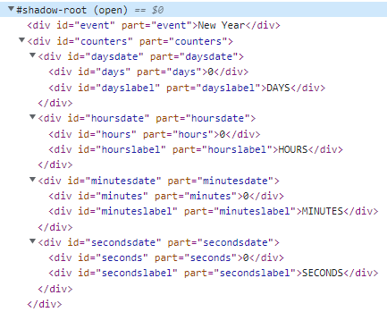

Use the <event-count> Web Component in HTML code:
event attribute Date notation: event="YYYY-MM-DD"
Set styles with CSS properties
<style>
--event-count-event-background: red;
--event-count-event-color: white;
--event-count-count-background: teal;
--event-count-count-font: 2.5rem Arial;
--event-count-count-color: gold;
--event-count-text-font: .7rem Arial;
</style>
Style shadowDOM with ::part(...)

<style>
event-count::part(event) {
background: gold;
color: blue;
}
event-count::part(count) {
text-shadow: 2px 2px 2px black;
}
event-count::part(year) {
color: beige;
}
</style>